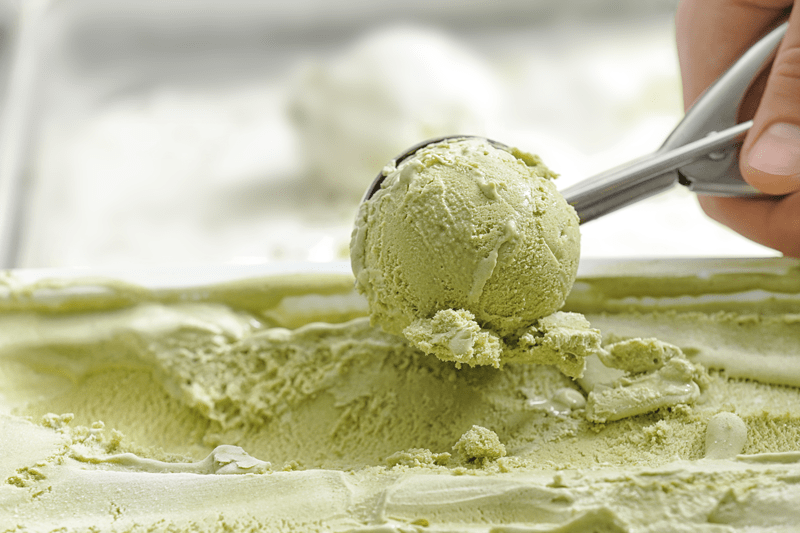
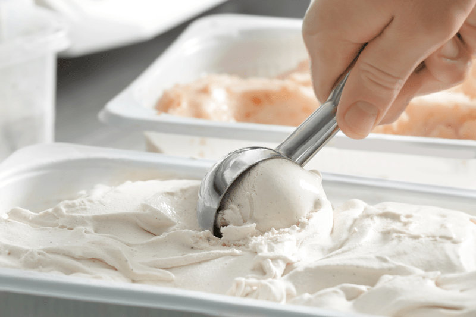
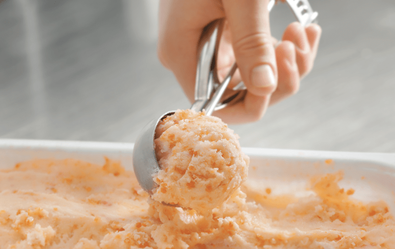

Ice Cream Ingredients (Basic Components of Raw Ice Cream)
Here’s the scoop… if you want to make raw vegan ice cream, you need to understand that certain ingredients are needed/required to help you create successful bowl-licking ice cream. Below, I will be listing out the most common ingredients that I use as the base for all my frozen creations.

Healthy Fats (the foundation)
Purpose
- Fats add richness, stabilizes the base mix, improves the density and smoothness of texture, and generally increases flavor.
- One of the hardest parts of making a dairy-free, raw ice cream is getting a rich enough base to create a firm foundation.
- For a good start, we need healthy fat so that our base will be rich and creamy. In my experience many dairy-free “milks” are thin, and if you don’t have enough fat in ice cream, it will become hard and icy.
Types of fats:
- Cashews
- They require soaking for at least two hours to help soften them and create a creamy mouth-feel. They will swell during the soaking process so be sure to soak in plenty of water.
- All measurements listed in my ice cream ingredients are before soaking.
- Do not use roasted or salted cashews. It will throw off the flavor of the ice cream, plus it is not a raw product.
- Cashews are neutral in flavor, so it makes for a beautiful base for any flavor creation.
- For a base, I tend to start with 2 cups of cashews (before soaking).
- Walnuts and Pecans
- These nuts can be used and offer a great flavor but aren’t as neutral in taste.
- Be sure to soak raw walnuts for eight hours. Drain and rinse thoroughly. Soaking and rinsing will remove the bitterness and tannins.
- Avocados
- Avocados will impart some flavor (depending on the other ingredients added).
- They will also affect the color, and if not careful you could end up with a grayish, off-putting color.
- Always use ripe avocados. If they are firm and unripe, they will impart a bitterness.
- If you are not a fan of avocados, you can easily mask their taste by adding sweeteners and raw cacao, making an excellent base for the ice cream.
- For a base, I tend to start with two large avocados.
- Young Thai Coconuts
- Young Thai coconuts make for a wonderful base due to their high-fat content and their creaminess when the flesh of the coconut is blended.
- These coconuts can be challenging to find (depending on where you live), expensive, and a bit of a gamble as to how many you will need. Please read this post for more information.
- The flavor is pretty subtle, even if you don’t love coconut, and especially if you mix it with fruit, chocolate, etc.
- For a base, I tend to start with 2 cups of meat/flesh.
- Canned full-fat coconut milk
- Another option that works great but isn’t raw.
- So far the leading brand that I use and have been happy with is Natural Value Coconut Milk. It is organic, comes in a BPA-free can, and doesn’t contain any fillers.
- For a base, I tend to use two cans, and always with the full-fat version. If you are comfortable with using canned coconut milk, always keep two cans in the fridge so that you can create ice cream on a whim.

Sweeteners
Purpose
- It seems obvious to say that sweeteners add sweetness, but they also improve the texture and body of the ice cream.
- Sugar lowers the freezing point of the mix, ensuring that the ice cream does not freeze rock-solid. In other words, reducing the sweeteners (for health or dietary reasons, for example) does not only affect sweetness but could also jeopardize the “build” and stability of the ice cream.
Types of sweeteners:
- Liquid Stevia:
- The bottle says to use 5-8 drops for 8 ounces of liquid.
- I don’t recommend using stevia all by itself as the only sweetener; it will affect the mouth-texture of the ice cream making it less creamy.
- Stevia works best when used in combination with another sweetener.
- Raw Honey
- I use unfiltered raw honey which means that it is VERY thick.
- If you are vegan, this may or may not be an option for you.
- I tend to use 1/2 – 2/3 cup for a recipe.
- Maple syrup
- Though not raw, it comes with health benefits.
- Look for grade B maple syrup to ensure maximum mineralization.
- I tend to use 1/2 – 2/3 cup for a recipe.
- Coconut Nectar:
- Coconut nectar has a very thick viscosity, much like molasses.
- Even though it’s derived from the coconut tree, it doesn’t taste like coconut.
- I tend to use 1/2 – 2/3 cup for a recipe.
- Dates:
- They are a whole food option.
- I prefer soft dates such as Medjool. Harder ones may require soaking before use.
- Dates can affect your recipe visually so keep this in mind.
- I tend to start with 1/2 cup and build from there.
- Yacon:
- Yacon has a molasses-like flavor and is raw, low-calorie, low glycemic, and is a pre-biotic (helps nurture intestinal bacteria).
- It is very thick like coconut nectar.

Emulsifiers
Purpose
- Lecithin is an emulsifier (binding property) and is very important in recipes involving blending fats with other liquids.
- Emulsifiers contribute significantly to a smooth and creamy texture by promoting fat destabilization.
- It’s possible that in very delicately flavored ice cream, lecithin will have a detectable flavor of its own.
- When an ice cream mixture is churned in an ice cream machine, air bubbles that are beaten into the mix are better stabilized, giving a smooth texture to the ice cream. If emulsifiers were not added, the air bubbles would not be adequately secured, and the ice cream would not have the same smooth texture.
Powdered Lecithin
- It is best to look for soy-free, GMO-free powdered lecithin.
- I find that powered lecithin has less taste than liquid.
- If the lecithin is granulated, grind it down to a powder first.
- I tend to use 1 Tbsp of lecithin per batch of ice cream.
Ice Crystals and Air
The last two things that I want to talk about are ice crystals and air. Even though they aren’t technically “ingredients,” both play an essential roll in the outcome of your ice cream. The more we understand a tiny bit of science in the art of making ice cream, the better off we are. I don’t know about you, but I want to make a bowl of ice cream that makes me lick the bowl clean!
Ice crystals
- Ice crystals are formed when the water content in the base starts to freeze; they put the “ice” in “ice cream,” giving solidity and body. The size of the ice crystals largely determines how fine, or grainy, the ice cream eventually turns out.
- The primary objective is to keep the size of the ice crystals as small as possible. Churning the ice cream as it freezes helps this process.
- Sugar forms a physical barrier to crystallization (that’s why low-sugar ice cream recipes often turn out with such poor results).
- Faster freezing is another way to cut down on the ice crystal size. But since we can’t always turn the temperature of our freezers down just for our ice cream, the answer is to freeze the ice cream in shallower containers. Perhaps a baking pan or ice-cube trays.
Air
- The tiny air cells whipped into the base mix are mostly responsible for the general consistency of ice cream and significantly affect texture and volume.
- The quicker an ice cream machine whips in the air, the more air there will be, resulting in creamier ice cream. Home ice cream machines can’t produce as much air as commercial ones, so this part is hard to replicate.
- When you are ready to transfer the ice cream from the ice cream makers container to a freezer-safe container, Do NOT pack the ice cream down or you will eliminate the fluffiness that helps make for a smoother texture.
Click (here) for some delicious ice cream recipes!
© AmieSue.com